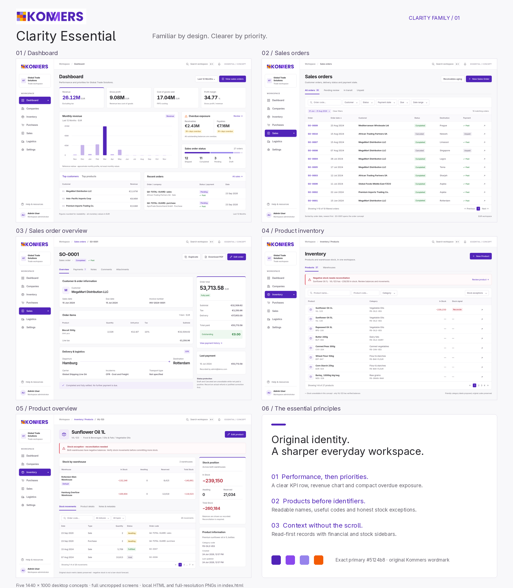
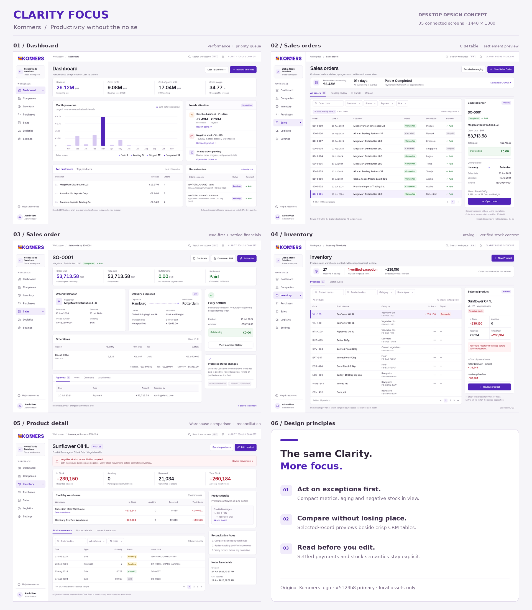
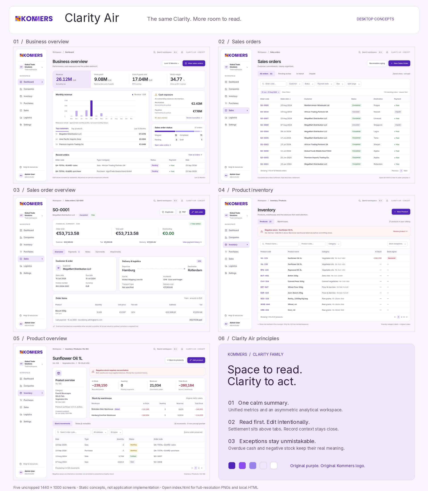
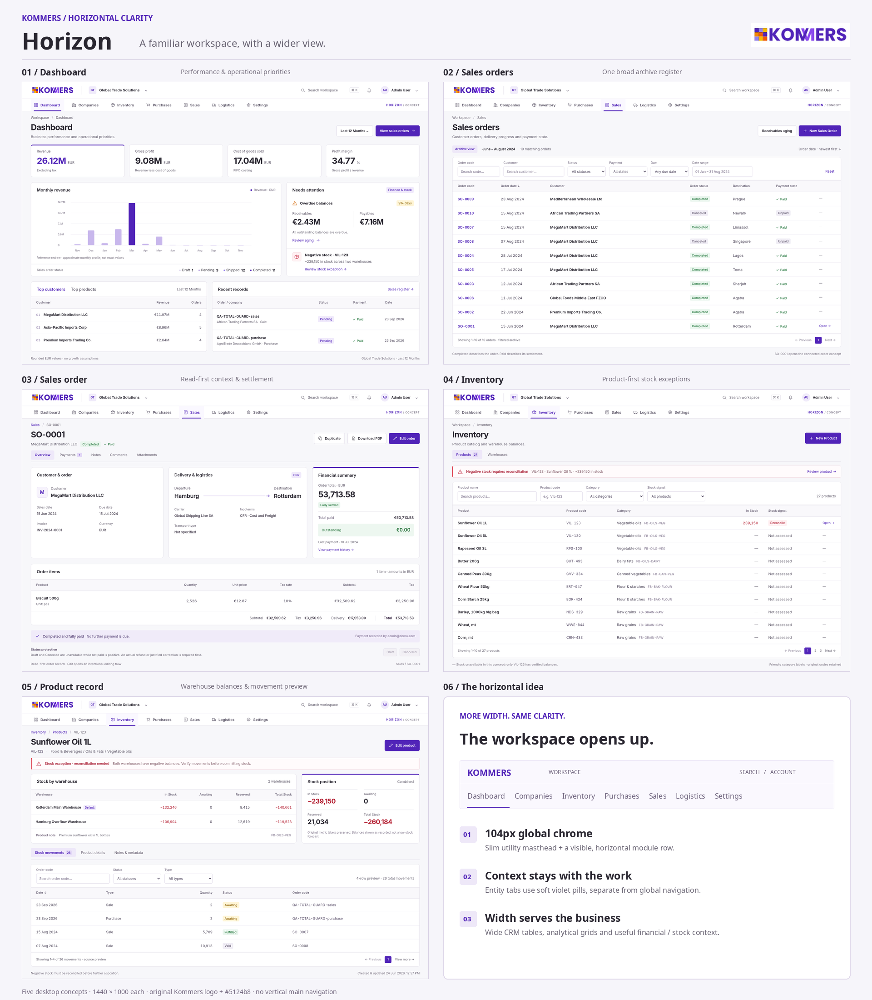
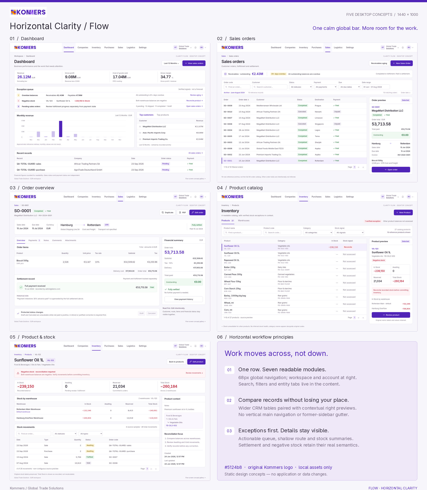
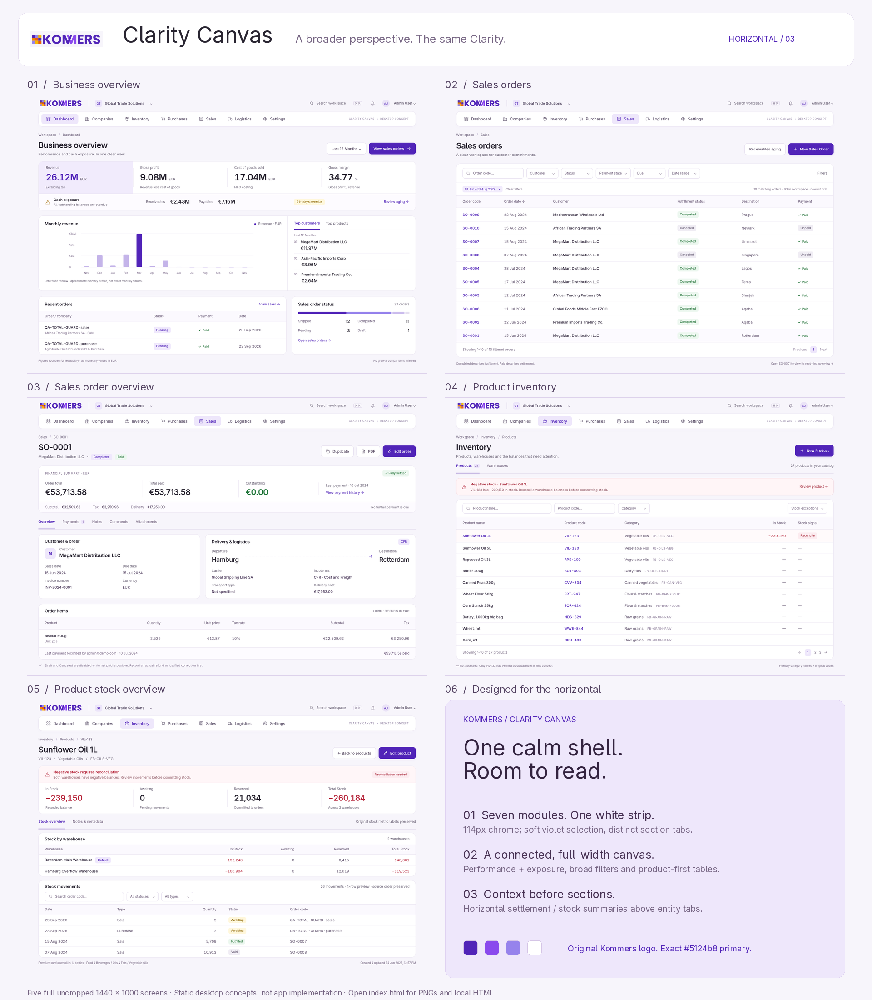

01 — Essential
Balanced, familiar and brand-faithful. Clear hierarchy with original-purple emphasis.
Explore five screens →Full-size board ↗

Compare vertical and horizontal navigation across the same five pages.
Original Kommers identity · 30 desktop screens · Visual concepts, not the live application.
Familiar left navigation with persistent workspace context.
Balanced, familiar and brand-faithful. Clear hierarchy with original-purple emphasis.
Explore five screens →Full-size board ↗
Compact tables, priority queues and contextual previews beside the selected record.
Explore five screens →Full-size board ↗
Softer surfaces, an inset left menu and more breathing room.
Explore five screens →Full-size board ↗
Navigation moves across the top; layouts use the wider workspace deliberately.
A two-tier header separates workspace utilities from a broad horizontal main menu.
Explore five screens →Full-size board ↗
A compact single-row menu creates room for readable tables and contextual previews.
Explore five screens →Full-size board ↗
A floating horizontal menu, broad analytical surfaces and prominent record summaries.
Explore five screens →Full-size board ↗